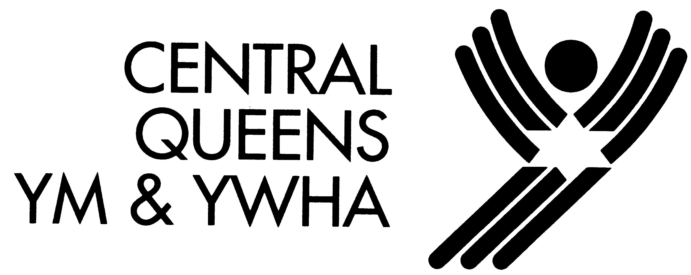

About the Site
College Classified is a site created by high school students, for high school students. Whether it's finding
scholarships to apply to, figuring out you perfecct college fit through a quiz, or managing your deadlines calender, College
Classifed is here to make the college admissions process as seamless as possible.
About the team
This site was made by the Girls Who Code Young Women Tech Leaders at the Queens Central Y. As young high school
students themselves, the College Classifed team wanted to make applying to college accessible to other young girls. Throughout
the winter and spring of 2017, they and their two Girls Who Code facilitators worked long and hard each week to
code the website you are reading now from scratch. They hope to inspire and encourage more girls in STEM
and encourage girls to apply to college.